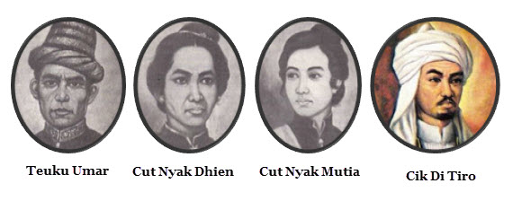
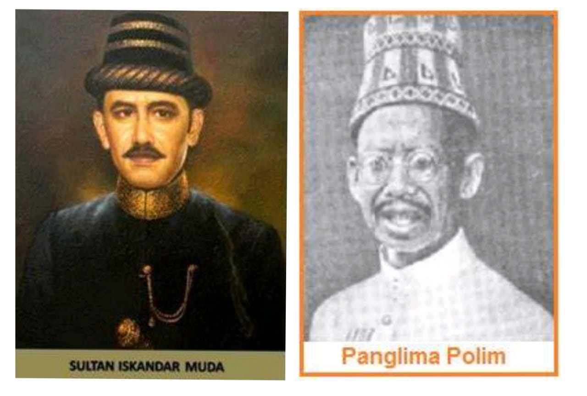

LATAR BELAKANG
Pada abad ke-19, Aceh tetap merdeka berkat Perjanjian Inggris-Belanda tahun 1824. Selama 1820-an, Aceh menjadi kekuatan politik dan komersial regional, terutama dalam perdagangan lada, yang meningkatkan pendapatan dan pengaruh raja-raja lokal. Permintaan lada yang tinggi di
Eropa dan Amerika memicu pertikaian diplomatik antara Inggris, Prancis, dan Amerika.
Pada masa Sultan Alauddin Ibrahim Mansur Syah (1838-1870), Kesultanan Aceh memperluas kekuasaannya, namun bentrok dengan ekspansi Belanda di Sumatera. Setelah Terusan Suez dibuka pada 1869, Inggris dan Belanda menandatangani perjanjian yang mengakhiri klaim Inggris atas Sumatra dan memberi Belanda pengaruh di Asia Tenggara, termasuk tanggung jawab memberantas pembajakan. Sebagai imbalannya, Inggris mendapat kendali atas Emas Belanda Pantai di Afrika dan hak komersial di Siak. Ambisi Belanda terhadap Aceh didorong oleh keinginan untuk mengeksploitasi sumber daya alam seperti lada dan minyak serta mengalahkan pesaing kolonial lainnya seperti Inggris dan Prancis.
Kronologi Kejadian Penting Sebelum Perang
1873 Perjanjian antara Aceh dan Belanda Mencoba membangun hubungan damai, namun akhirnya gagal.
1870-an Pertengkaran politik di Aceh Perebutan kekuasaan dan pengaruh antar kelompok politik.
1800-an Perdagangan internasional berkembang pesat di Aceh Menjadi pusat perdagangan dan pelayaran di kawasan Asia Tenggara.
STRATEGI
Belanda mencoba beberapa strategi selama perang; satu serangan cepat pada tahun 1873 gagal, yang kemudian menyebabkan mereka melakukan blokade laut, upaya rekonsiliasi, konsentrasi dalam barisan benteng, dan akhirnya penahanan pasif. Semua ini tidak banyak membuahkan hasil. Biaya operasinya mencapai 15 hingga 20 juta gulden per tahun, yang hampir membuat pemerintah kolonial bangkrut
Serangan Belanda pertama
Pada tahun 1873, negosiasi terjadi di Singapura antara perwakilan Kesultanan Aceh dan Konsul Amerika setempat mengenai potensi perjanjian bilateral. Belanda melihat hal ini sebagai pelanggaran terhadap perjanjian sebelumnya dengan Inggris pada tahun 1871 dan menggunakan ini sebagai kesempatan untuk mencaplok Aceh secara militer. Ekspedisi di bawah pimpinan Mayor Jenderal Johan Harmen Rudolf Köhler diutus pada tanggal 26 Maret 1873, yang membombardir ibu kota Banda Aceh dan mampu menduduki sebagian besar
wilayah pesisir pada bulan April. Itu niat Belanda untuk menyerang dan merebut istana Sultan, yang juga akan berujung pada pendudukan seluruh negeri. Sultan meminta dan mungkin menerima bantuan militer dari Italia dan Inggris di Singapura. Bagaimanapun, tentara Aceh dengan cepat dimodernisasi dan diperbesar dengan jumlah berkisar antara 10.000 hingga 100.000.Karena meremehkan kemampuan militer orang Aceh,
Belanda membuat beberapa kesalahan taktis dan mengalami kerugian termasuk kematian Köhler dan 80 tentara. Kekalahan ini menggerogoti moral dan gengsi Belanda.
Setelah memutuskan mundur, Belanda memberlakukan blokade laut terhadap Aceh. Dalam upaya mempertahankan kemerdekaan Aceh, Sultan Mahmud meminta bantuan langsung kepada negara-negara Barat dan Turki, namun tidak membuahkan hasil. Meskipun Konsul Amerika bersimpati, pemerintah Amerika tetap netral. Karena lemahnya posisinya di kancah politik internasional, Kesultanan Utsmaniyah tidak berdaya dan Inggris menolak campur tangan karena hubungannya dengan Belanda. Hanya Perancis yang bersedia menanggapi permohonan Mahmud
Serangan Belanda kedua
Pada bulan November 1873, ekspedisi kedua yang terdiri dari 13.000 tentara dipimpin oleh Jenderal Jan van Swieten dikirim ke Aceh.[8] Invasi tersebut bertepatan dengan wabah kolera yang menewaskan ribuan orang di kedua sisi. Pada bulan Januari 1874, kondisi yang memburuk memaksa Sultan Mahmud Syah dan para pengikutnya meninggalkan Banda Aceh dan mundur ke pedalaman. Sementara itu, pasukan Belanda menduduki ibu kota dan merebut “dalam” (istana sultan) yang secara simbolis penting, membuat Belanda percaya bahwa mereka telah menang. Penjajah Belanda kemudian membubarkan Kesultanan Aceh dan mendeklarasikan Aceh sebagai bagian dari wilayah Hindia Belanda.
Sepeninggal Mahmud karena kolera, masyarakat Aceh memproklamasikan cucu muda Alauddin Ibrahim Mansur Syah, bernama Tuanku Muhammad Daud, sebagai Alauddin Muhammad Da'ud Syah II (memerintah 1874–1903) dan meneruskan perjuangannya di wilayah perbukitan dan hutan selama sepuluh tahun, dengan banyak korban jiwa di kedua belah pihak. Sekitar tahun 1880 strategi Belanda berubah, dan alih-alih melanjutkan perang, mereka kini berkonsentrasi mempertahankan wilayah yang sudah mereka kuasai, yang sebagian besar terbatas pada ibu kota (Banda Aceh modern) dan kota pelabuhan Ulee Lheue. Blokade laut Belanda berhasil memaksa uleebelang atau pemimpin sekuler untuk menandatangani perjanjian yang memperluas kendali Belanda di sepanjang wilayah pesisir. Namun, uleebelang kemudian menggunakan pendapatan mereka yang baru diperoleh kembali untuk membiayai kekuatan perlawanan Aceh.
Intervensi Belanda di Aceh memakan korban jiwa ribuan tentara dan sangat menguras pengeluaran keuangan pemerintah kolonial. Pada tanggal 13 Oktober 1880, pemerintah kolonial menyatakan perang telah berakhir dan membentuk pemerintahan sipil, namun terus mengeluarkan banyak uang untuk mempertahankan kendali atas wilayah yang didudukinya. Dalam upaya untuk mendapatkan dukungan dari masyarakat Aceh setempat, Belanda membangun kembali Masjid Raya Baiturrahman atau Masjid Agung di Banda Aceh sebagai tanda rekonsiliasi.
Nilai yang dapat di ambil
Semangat Nasionalisme dan Cinta Tanah Air:
Semangat ini dapat diterapkan dalam upaya menjaga keberagaman, mempertahankan kedaulatan bangsa, dan terus membangun negara.
Rela Berkorban dan Tidak Pantang Menyerah:
Semangat ini dapat diimplementasikan dalam berbagai bidang, seperti dalam meraih kesuksesan pribadi, mengatasi masalah sosial, dan membangun bangsa.
Persatuan dan Kesatuan :
Nilai ini dapat diterapkan dalam berbagai aspek kehidupan, seperti dalam membangun hubungan sosial yang harmonis, menyelesaikan konflik, dan membangun bangsa yang lebih kuat.
Menjaga Perdamaian :
Prinsip ini dapat diimplementasikan dalam upaya membangun hubungan antar masyarakat yang lebih harmonis, menyelesaikan konflik dengan cara damai, dan membangun bangsa yang lebih maju.
Ilustrasi

Ringkasan
Tanggal : 1873–1904
Lokasi : Kesultanan Aceh (sekarang Aceh, Indonesia)
Hasil : Kemenangan Belanda
Pemberlakuan kekuasaan Belanda atas Aceh
Perubahan wilayah : Pembubaran Kesultanan Aceh; Aceh dianeksasi ke Hindia Belanda
Tokoh & Pemimpin


Pihak Terlibat
1. Belanda
2. Tentara Kerajaan Hindia Belanda
3. Angkatan Laut Kerajaan Belanda
4. Kesultanan Aceh
5. Ulama Islam